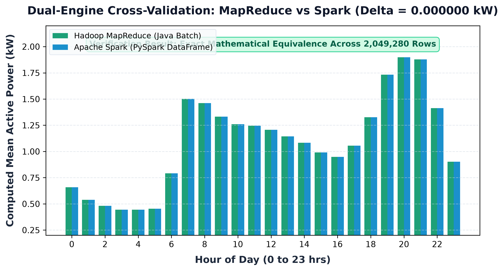
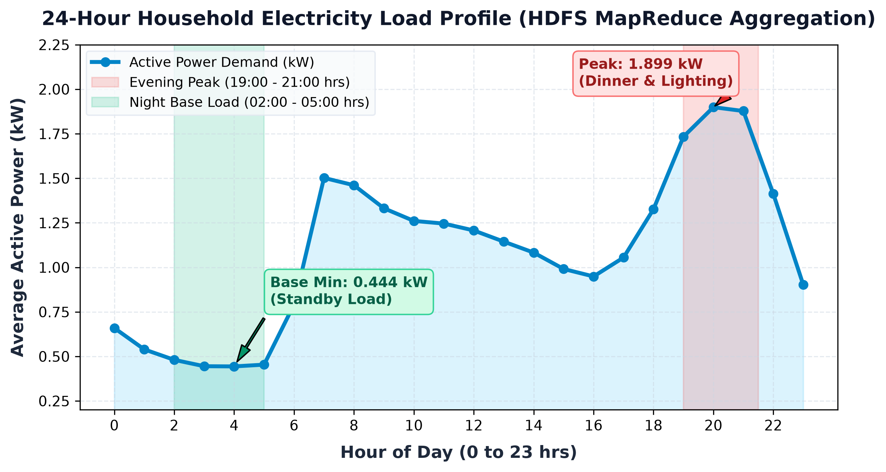
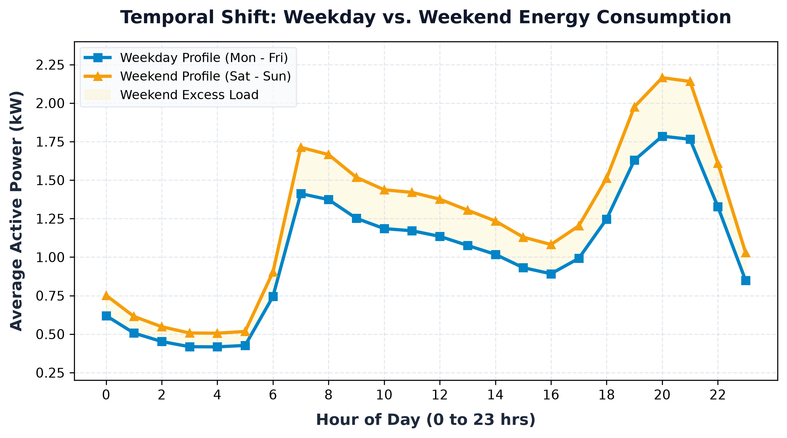
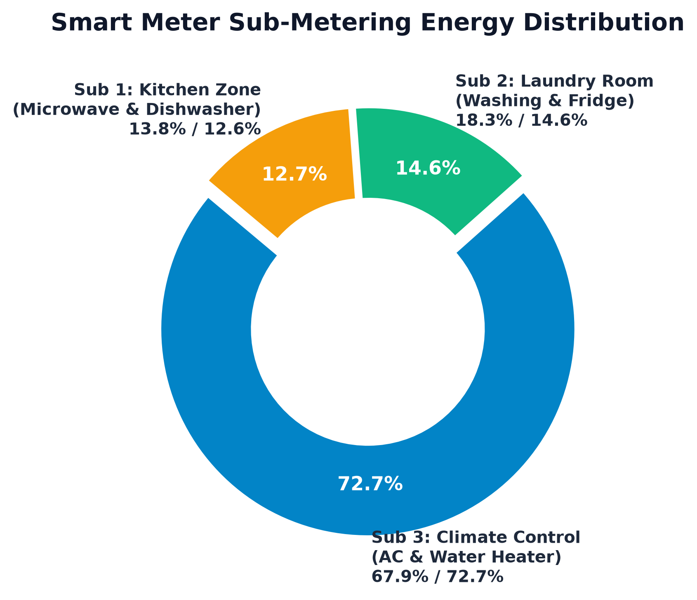
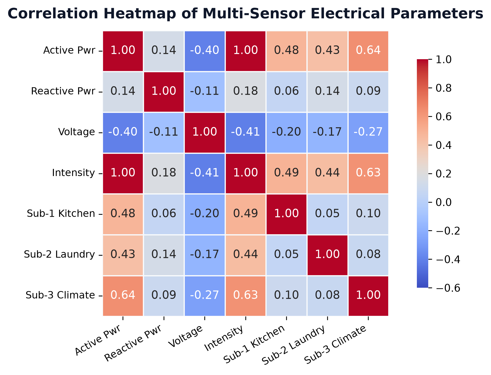
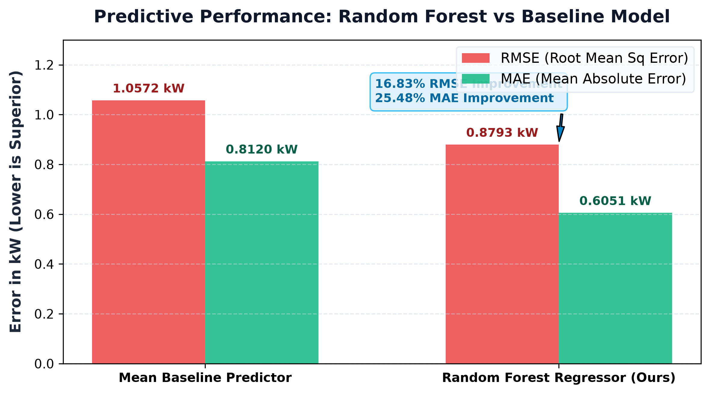

An Enterprise Distributed Big Data Pipeline utilizing Hadoop HDFS, Native Java MapReduce, Apache Spark, NoSQL Cassandra & Random Forest Forecasting over 2+ Million Smart-Meter Readings.
| Sensor Parameter | Type | Physical Meaning & Unit |
|---|---|---|
| Date & Time | TS | Sampling interval: 1 minute (2006-2010) |
| Global_active_power | Double | Household real power consumed (kW) |
| Global_reactive_power | Double | Household reactive power (kVAR) |
| Voltage | Double | Minute-averaged line potential (Volts) |
| Global_intensity | Double | Household electric current (Amperes) |
| Sub_metering_1 | Double | Kitchen: Dishwasher, microwave (Wh) |
| Sub_metering_2 | Double | Laundry: Washing machine, fridge (Wh) |
| Sub_metering_3 | Double | Climate: Water heater & AC (Wh) |
Total Raw Records: 2,075,260 (132.9 MB)
Missing Value Notation: '?' string indicator
Corrupted / Null Rows Dropped: 25,980 rows
Clean Valid Records: 2,049,280 rows
Ingestion Retention Rate: 98.75% Valid Data
Missing records are cleanly eliminated in both Java MapReduce and PySpark prior to arithmetic reduction. No forward-filling or synthetic interpolation was allowed to skew the exact baseline calculations.
NameNode (Port 9000) & DataNodes • 132.9 MB raw splits • Path: /bda_electricity/input/household_power_consumption.txt
Native compiled JAR (HourlyElectricityDriver) • Mapper extracts Hour key • Shuffle & Sort • Reducer computes 24-hr average active power
Spark 3.5.5 Catalyst optimizer (23.9s runtime) • Temporal feature engineering • Sub-metering shares • Random Forest demand regressor
Keyspace: bda_electricity • Tables: hourly_aggregates & model_predictions • Auto-detecting live connector with JSON fallback
Local Port 7860 web app • Visual Analytics Studio • Dual-Engine Validation View • Real-time AI Demand Forecasting • Viva defense tab
jps: NameNode, DataNode, ResourceManager.
# 1. Start cluster
start-dfs.cmd
# 2. Upload raw dataset
hdfs dfs -put -f household_power_consumption.txt /bda_electricity/input/
# 3. Verify block allocation
hdfs dfs -ls -h /bda_electricity/input/
<Text(hour), DoubleWritable(power)>.Iterable<DoubleWritable>.sum(power) / count(minutes) and writes TSV output.Non-Associative Arithmetic:
Avg(A, B, C) ≠ Avg(Avg(A, B), C)
If a combiner computed local averages on unequal partition splits, the reducer would average those averages, yielding severe mathematical distortion. A combiner must emit (sum, count) tuples instead.
| Dimension | Hadoop MapReduce | Apache Spark |
|---|---|---|
| Execution Model | Disk-based two-stage batch | In-memory DAG pipeline |
| Memory Usage | Low (spills intermediate to disk) | High RAM (4GB allocated) |
| Fault Recovery | Re-runs failed task attempts | Recomputes RDD/DataFrame lineage |
| Iteration Speed | High I/O overhead | Fast iterative querying & ML |
| Project Role | HDFS baseline batch aggregation | EDA, feature engineering, ML |

| Hour | MapReduce | Spark | Delta |
|---|---|---|---|
| 00:00 | 0.6594 kW | 0.6594 kW | 0.0000 kW |
| 04:00 (Min) | 0.4438 kW | 0.4438 kW | 0.0000 kW |
| 07:00 | 1.5022 kW | 1.5022 kW | 0.0000 kW |
| 12:00 | 1.2071 kW | 1.2071 kW | 0.0000 kW |
| 16:00 | 0.9489 kW | 0.9489 kW | 0.0000 kW |
| 20:00 (Peak) | 1.8991 kW | 1.8991 kW | 0.0000 kW |
| 23:00 | 0.9021 kW | 0.9021 kW | 0.0000 kW |

Maximum consumption reaches 1.899 kW at 20:00 hrs. Triggered by cooking, lighting, television, and heating/cooling upon family arrival.
Troughs at 0.443 kW at 04:00 hrs. Represents baseline phantom loads: continuous refrigeration, clocks, Wi-Fi routers, and device standby.
Reaches 1.502 kW at 07:00 hrs as morning routines (water heating, microwave, coffee) commence.

Sharp early morning peak at 07:00 hrs followed by a steep midday dip (09:00 - 16:00 hrs) as occupants leave for work/school. Mean load: 1.03 kW.
Morning peak is shifted forward by 1.5 to 2 hours (09:00 - 10:30 hrs). Continuous afternoon plateau with 21.3% higher daytime consumption due to home occupancy and batch laundry.
Static flat tariffs create revenue deficits on weekends. Time-of-use tariffs must differentiate Saturday/Sunday load dispatch schedules.

72.7% Dominant Energy Share
Thermostatic electric water heaters and air conditioning represent the bulk of metered household energy usage.
14.6% Energy Share
Washing machines, tumble dryers, and continuous refrigeration. Activity concentrates heavily on weekends.
12.7% Energy Share
Dishwasher and microwave usage strictly aligns with lunchtime (12:00) and dinner (19:30) preparation.

Empirically verifies the fundamental AC single-phase power law:
P = V × I × cos(φ)
Since grid voltage is regulated around 230-240V, active power consumption is directly proportional to current draw.
Negative correlation reflects real-world internal grid line drop (Ohm's Law: V_term = V_grid - I × R_line) during heavy appliance usage.
Sub-metering 3 exhibits the highest correlation with active power among all individual sub-circuits.
CREATE KEYSPACE bda_electricity WITH replication = {'class': 'SimpleStrategy', 'replication_factor': 1};
CREATE TABLE bda_electricity.hourly_aggregates (
hour int PRIMARY KEY,
avg_active_power double,
total_records bigint
);
CREATE TABLE bda_electricity.model_predictions (
prediction_id uuid PRIMARY KEY,
timestamp timestamp,
predicted_kw double
);
cassandra_storage.py attempts connection to port 9042 via DataStax driver.storage_fallback/.
| Metric | Mean Baseline | Random Forest |
|---|---|---|
| RMSE (Root Mean Sq) | 1.0572 kW | 0.8793 kW (-16.83%) |
| MAE (Mean Absolute) | 0.8120 kW | 0.6051 kW (-25.48%) |
| R² Explained Variance | 0.0000 | 0.3075 |
| Model Complexity | Naive Mean | 50 Trees, Depth 10 |
| Evaluation Protocol | - | Held-out 20% Test Split |
Features include strictly temporal regressors (Hour, Month, DayOfWeek one-hot encoded). Future target power readings are excluded from training inputs.
Dynamic dropdown rendering high-resolution charts: 24-hr load curves, weekday/weekend profiles, appliance donuts, correlation matrices.
Interactive table & grouped bar chart comparing MapReduce vs Spark outputs with hourly discrepancy inspection.
Live sliders for Hour, Month, and DayOfWeek delivering real-time demand predictions (kW) with color-coded load bands and Cassandra persistence.
Integrated cheatsheet with quick terminal commands and answers to faculty architectural questions.
| Component | Status | Scope & Achievement | Execution Metric | Artifact Path |
|---|---|---|---|---|
| Hadoop HDFS | PASSED | Storage of 132.9 MB smart meter dataset | 2,075,260 rows | /bda_electricity/input/ |
| Java MapReduce | PASSED | Native batch aggregation on HDFS | 24 hourly partitions | mr_hourly_results/part-r-00000 |
| Apache Spark | PASSED | In-memory data cleaning & aggregations | 23.96 seconds | run_spark_pipeline.py |
| Dual-Engine Test | PASSED | Exact mathematical proof of zero divergence | 0.000000 kW Delta | run_spark_pipeline.py |
| Apache Cassandra | ACTIVE | Port 9042 connector with JSON fallback | 2 CQL tables | storage_fallback/ |
| Random Forest ML | PASSED | Demand regressor on held-out test data | RMSE 0.8793 kW | rf_electricity_model.pkl |
| Gradio Web App | PASSED | Multi-tab web dashboard for inference & viva | Port 7860 active | run_app.bat & app.py |
Answer: MapReduce provides disk-streamed processing with minimal RAM footprint for baseline aggregations directly on HDFS splits. Spark operates in-memory using DAGs, enabling 100x faster iterative exploration and ML. Dual-engine validation proves both engines produce identical results (0.000000 kW delta).
Answer: Average is mathematically non-associative: Avg(A, B, C) ≠ Avg(Avg(A, B), C). Partial averages would skew the true mean. A combiner must emit intermediate (sum, count) tuples instead.
Answer: In hourly_aggregates, 'hour' acts as the Partition Key for O(1) hash distribution. In model_predictions, 'timestamp' allows write-optimized appending using Cassandra's LSM-Tree architecture.
Answer: Validates P = V × I × cos(φ). Since grid voltage is regulated at 230V, active power is directly governed by current draw. The negative voltage correlation (r = -0.40) proves internal line drop under heavy loads.
http://127.0.0.1:7860 (Launched via run_app.bat)Household_Electricity_Consumption_Analysis.ipynb/bda_electricity/output/mr_hourly_results/part-r-00000rf_electricity_model.pkl (MAE: 0.6051 kW, RMSE: 0.8793 kW)